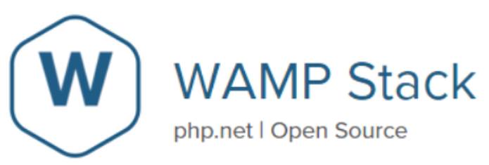
* 다음 포스팅은 BitNami 프로그램 설치 방법에 대해 정리한 글로, 개인적인 공부 내용을 기록하기 위한 용도로 작성 되었기 때문에 잘못된 내용을 포함하고 있을 수 있습니다.
구글에 BitNami WAMP Stack 을 검색한 뒤 최상단에 출력되는 공식 사이트로 들어가 준다.
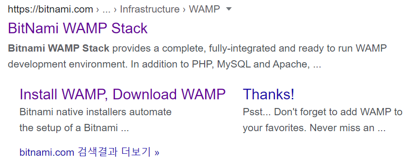
자신의 운영체제에 맞는 버전을 선택한다.
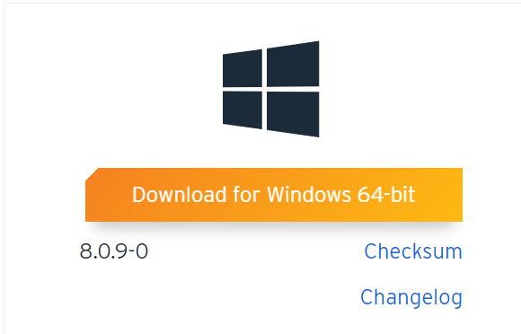 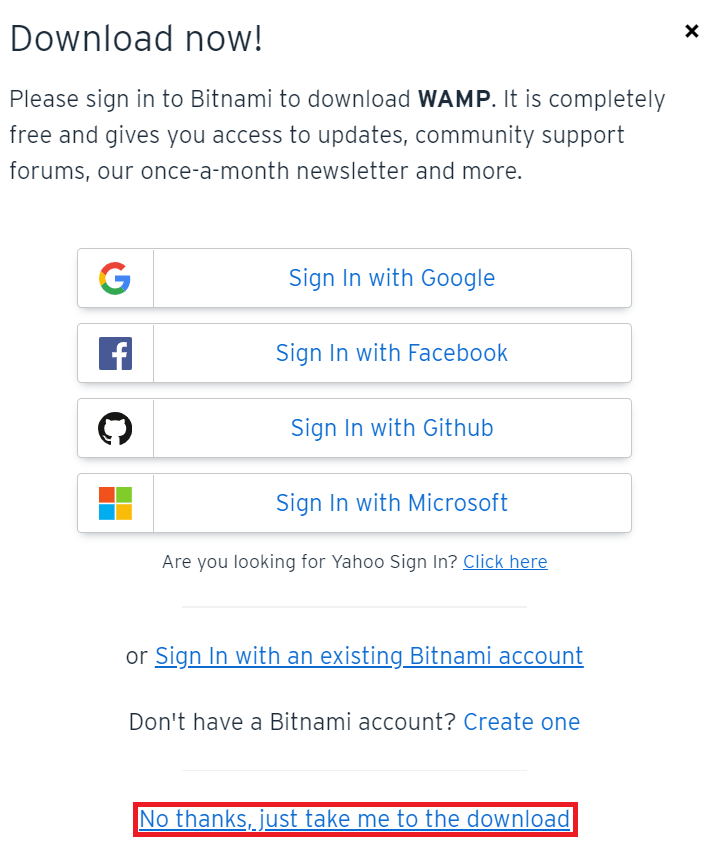
설치를 완료했다면 exe 실행파일을 실행시켜 준다.
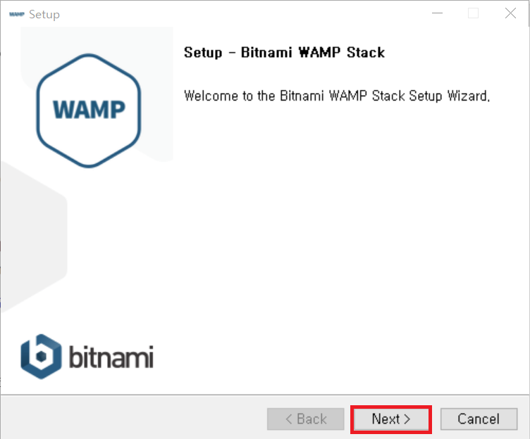
가장 아래 필수항목 (PhpMyAdmin) 을 제외한 나머지 항목들은 Php 프로그래밍을 할 때 필요한 프레임워크 들인데, 굳이 설치하지 않아도 상관없다. 선택을 완료했다면 Next를 눌러준다.
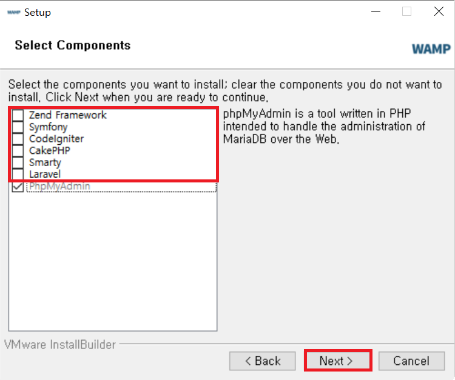 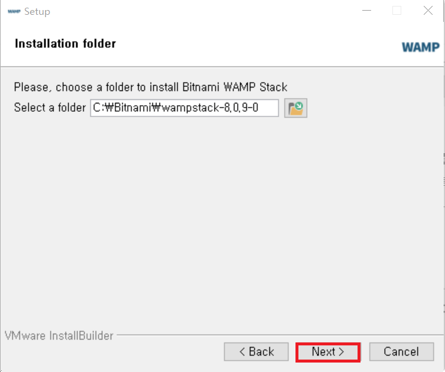
다음은 MySQL 관리자 비밀번호를 설정하는 화면이다. 나중에 사용되니 따로 적어두고, Next를 눌러준다.
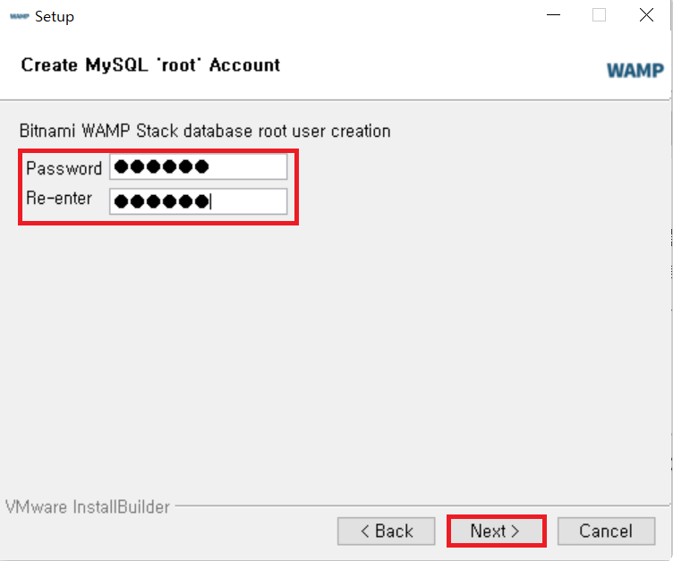 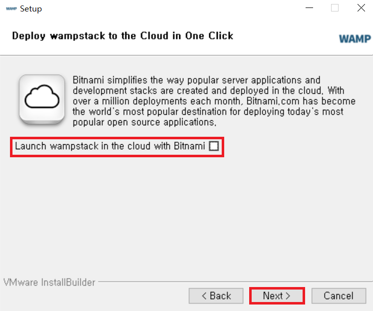
이제 조금 기다리면 설치가 완료된다. (만약 설치 도중 윈도우 방화벽 경고가 뜬다면 허용을 눌러준다.)
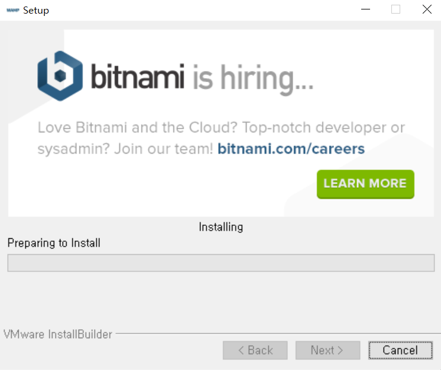
마지막으로 비트나미가 잘 설치 되었는지 확인해 보도록 하자.
주소창에 localhost/index.html 을 입력해 보자. 만약 아래와 같은 화면이 출력된다면 비트나미가 성공적으로 설치된 것이다. (여기서 localhost는 자신의 컴퓨터를 의미하고 , index.html 파일을 출력해 달라는 의미이다.)
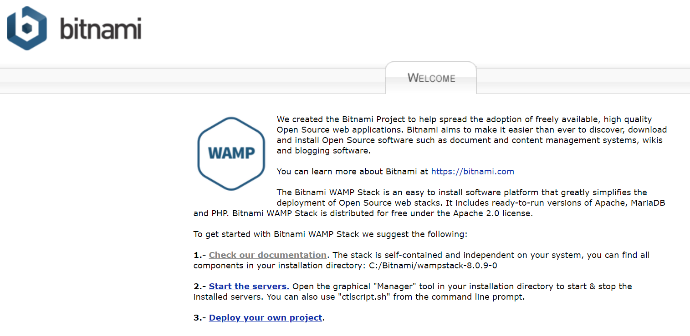